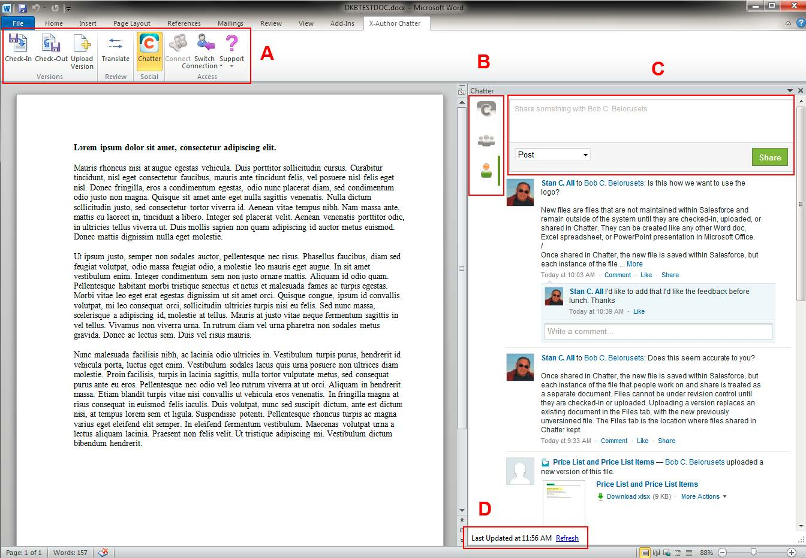

Working with X-Author Chatter
X-Author Chatter presents four unique pieces of functionality that enable you to control files using Salesforce, collaborate on them, and translate them. Apart from those pieces, the Microsoft Products and Chatter work as expected with all of their standard functionality being available.

A - The X-Author Chatter ribbon is used to check-in, check-out, and update the revision of files. This helps to ensure you do not have multiple copies of a document. The Translate option provides the ability to quickly translate content using one of 39 supported languages. The ribbon is also used to invoke Chatter.
B - The audience for the content you want to share and collaborate on can be your entire organization, custom groups, individuals you follow and that follow you, or a document associated with a Salesforce object that can be followed, such as Opportunity.
C - The comments and sharing options control how much of the document you are working on you are going to share with your targeted audience in the Chatter feed. Once in the feed, standard Chatter actions can be used with the content.
D - The Chatter feed will automatically refresh; however, you can also manually refresh the feed by clicking Refresh. This helps to ensure you are receiving feedback from colleagues as soon as they add a comment to the feed.